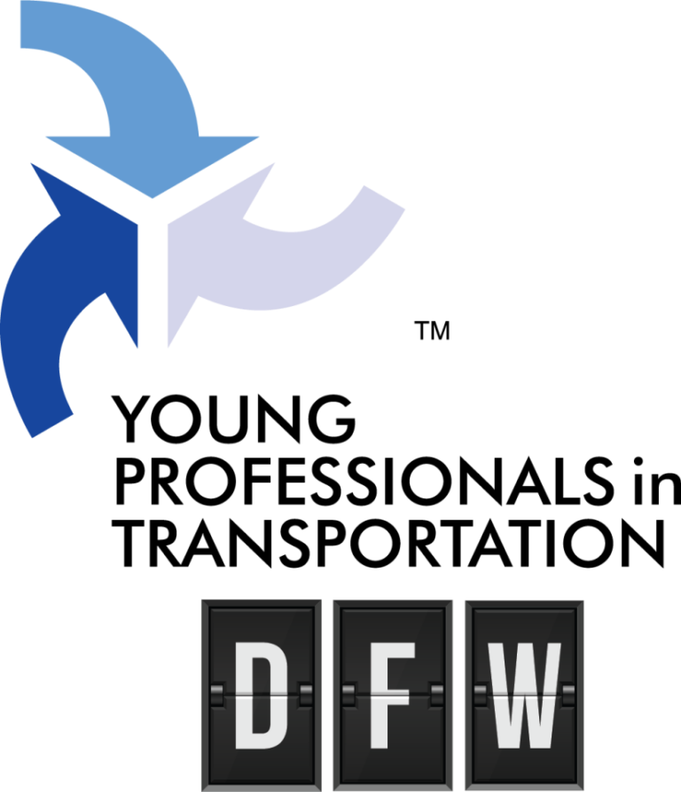
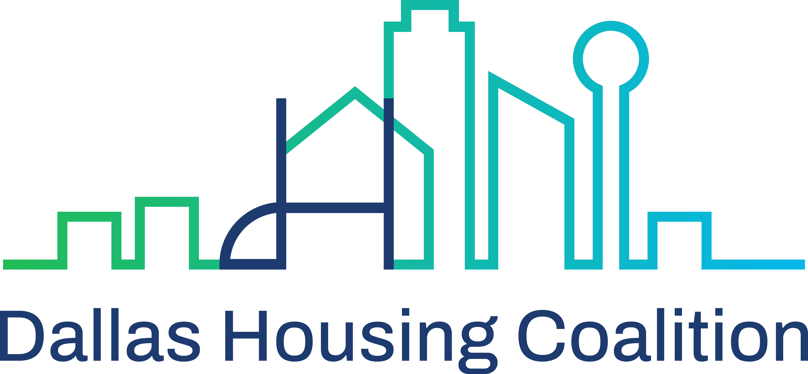
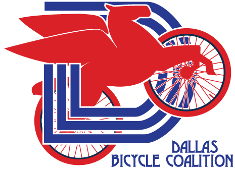
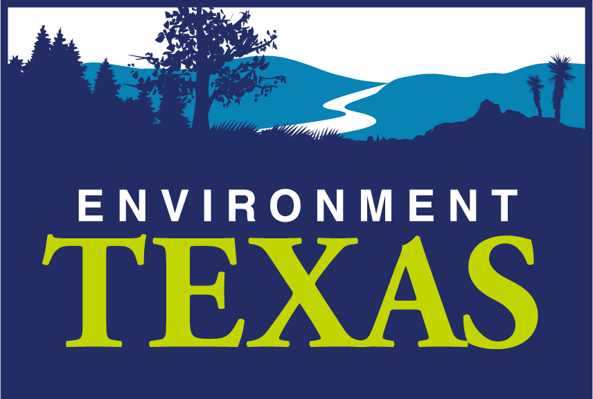
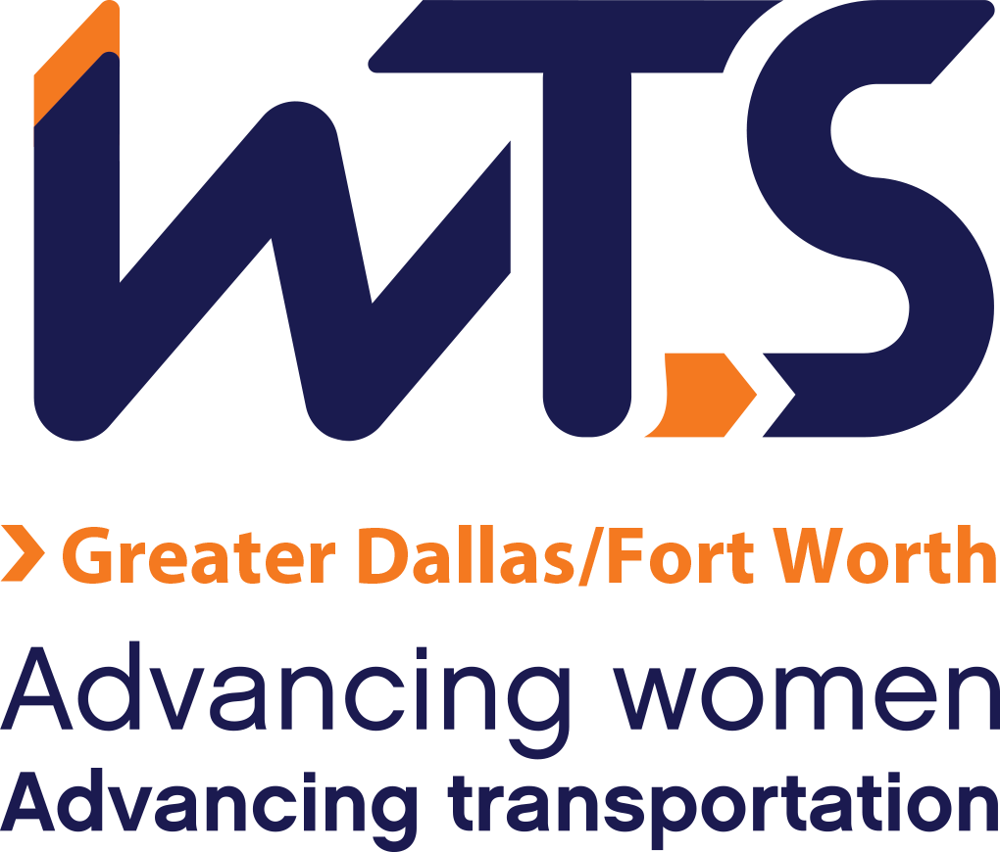

The Dallas Area Transit Alliance (DATA) advocates for stronger public transit across all 13 DART cities. Founded in 2024 to oppose DART funding cuts, DATA works to protect service, influence policy, and promote practical transit solutions.
Dallas Urbanists is a Strong Towns Location Conversation. We connect like-minded residents to promote informed, empathetic conversations on walkability, transportation, and housing.
Greenspace Dallas mission is to restore and develop accessible national park-quality green spaces within the Trinity River Corridor. We’re also big believers in nurturing tomorrow’s environmental leaders - engaging companies and the community to roll up their sleeves with, and ultimately create a healthier city for all.
AIA Dallas serves as an advocate for architects in our region and as a resource hub for members, clients, and the community. Our chapter fosters connections and professional relationships that help develop, inspire, and drive opportunities to impact our world through meaningful design.
Young Professionals in Transportation (YPT) Dallas-Fort Worth chapter is a 501(c)(6) nonprofit
coalition focused on professional development, fellowship, and networking for individuals in the
transportation industry within the Dallas-Fort Worth metroplex. Our executive board possesses a
diverse background in transportation including rail, truck, and air.
Despite our name, there are no associated age restrictions with YPT DFW. Our membership consists of
professionals directly and indirectly involved in the transportation sector as well as students
seeking knowledge and employment opportunities in the transportation industry.

Dallas Housing Coalition is a coalition of over 350 organizations and individuals advocating for increased public investment in housing, preserving affordable homes, and ensuring attainable housing across income levels in the Dallas region.

Dallas Bicycle Coalition brings together cycling advocates to promote safer streets, improved infrastructure, and a thriving cycling culture. Partnering with local groups and businesses, it supports advocacy, education, and community events, aiming for a future where cycling is safe, popular, and convenient.

Environment Texas is a non-profit research and advocacy organization that works for clean air, clean water, clean energy, wildlife, open spaces, and a livable climate for all Texans.

Downwinders at Risk mobilizes North Texas communities to fight for clean air and environmental justice through grassroots organizing, education, and advocacy.
WTS attracts, sustains, connects, and advances women’s careers to strengthen the transportation industry.

The Better Block Foundation is a 501(c)3 nonprofit that educates, equips, and empowers communities and their leaders to reshape and reactivate built environments to promote the growth of healthy and vibrant neighborhoods.